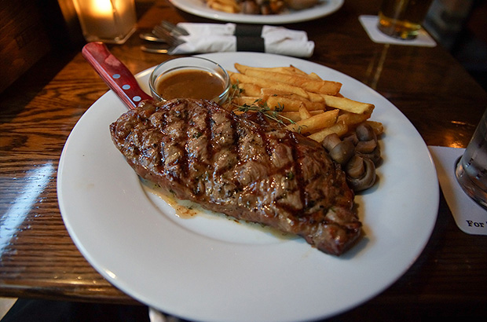
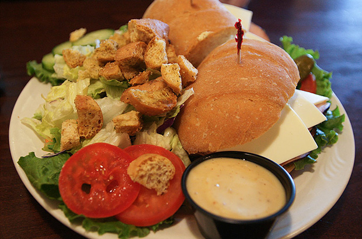
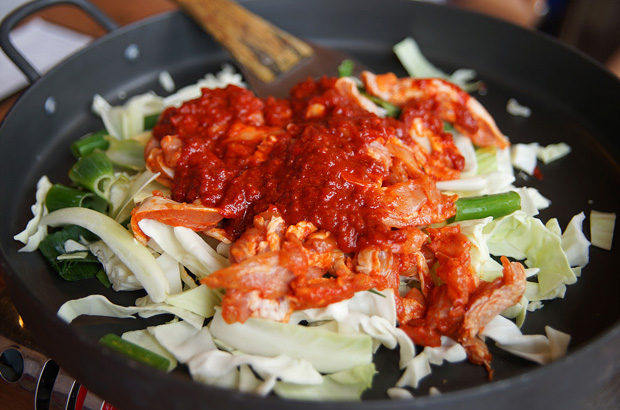

Alternar menu
Panelando
Login
Cadastrar
Home
Receitas
Nova Receita
Bife com Batatas
Virado de Repolho
Sanduíche de Filet Mignon
Bife com Batatas
15 Min
6 Porções
Fácil

Sanduíche de Filet Mignon
15 Min
6 Porções
Fácil

Virado de Repolho
15 Min
6 Porções
Fácil
